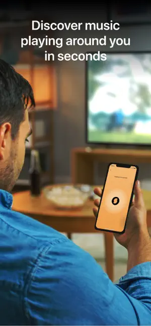

SoundHound 到底值不值得掏钱？一次性买断的账我算清楚了
免费版和付费版功能一模一样，只差有没有广告——3-4 美元的买断到底值不值？分三类人给你算明白。
朋友问我，在官网上看到 SoundHound 的买断弹窗到底值不值得点，我愣了一下——确实，市面上识曲 App 要么完全免费（Shazam），要么按月按年订阅，像 SoundHound 这样搞一次性买断的，还真少见。而且最让人困惑的是：免费版和付费版功能完全一样，唯一的区别就是有没有广告。这账得好好掰扯。
先把定价摆在明面上
SoundHound 有两个版本：免费版叫 SoundHound，付费版叫 SoundHound∞（念作 SoundHound Infinity）。后者是一次性买断，没有月费、没有年费、买断之后终身使用。
价格方面，iOS 大约 3-4 美元，Android 类似。注意两个坑：一是 iOS 和 Android 的授权互不通用——你在苹果商店买了 SoundHound∞，换安卓手机就得再买一次，反过来也一样，因为 Apple 和 Google 的应用商店是两个独立生态，跨平台授权需要开发者额外支持，SoundHound 目前没做；二是付费版在商店里是一个独立的 App，不是免费版里点个升级按钮解锁，下载完得单独安装。
关于功能——我再强调一遍，两个版本没有任何差异。听音识曲、哼唱搜索、语音指令、LiveLyrics 实时歌词、Spotify/Apple Music 连接、YouTube 播放器、历史收藏同步——这些核心能力免费版全都有。付费版给你的东西只有一样：把每次识曲之后弹出来的插屏广告去掉。
说实话，这个定价策略挺鸡贼的。大多数 App 的付费版是"解锁更多功能"，给你一个明确的增量期待；SoundHound 偏不，它把所有功能都给你，然后用广告体验来逼你掏钱买清净。就像去餐馆吃饭，菜的分量和口味都不变，只是邻桌的人一直在你耳边吵——你花钱不是为了多吃一口，是为了让那个人闭嘴。
不过话说回来，3-4 美元换终身清净，这个数字本身不贵。关键是：你被吵到了吗？
分三种人算账
轻度用户：一周用不到三次
如果你只有走在街上偶尔听到一首好听的歌、或者朋友聚会时有人放音乐才掏出 SoundHound，一周用不了三次——不用买。
理由很简单：你一周被广告烦三次，花 3-4 美元把这三次广告去掉，平均每次 1 美元多。这笔钱换任何一个轻度用户都会觉得不值，不如下次识曲的时候耐心等两秒跳过广告。
而且还有个隐藏好处：轻度用户可能不知道，但 SoundHound 的识曲结果页底部有个很小的"看广告换得免费使用"提示——如果你真觉得广告烦，偶尔点一下可能还能触发 App 给你几天的无广告体验（不同版本实现不同，我 iOS 上遇到过几次）。算下来白嫖也能对付。
主力用户：每天都用，每次识曲都烦
如果你每天都要用 SoundHound——可能是通勤路上边走边识曲、可能是每天开车用语音指令搜歌、可能是做音乐相关的工作需要频繁识别——闭眼付。
算账：按每天用 5 次来算，3-4 美元摊到每天不到一美分。一个月花不到两毛钱，一年也就两块多。花两块钱让你一个月不用被 150 次插屏广告打断，这性价比还有什么好纠结的？
而且主力用户还有一个额外理由：SoundHound 的哼唱搜索是独一份的。市面上主流识曲工具（包括 Shazam）都不支持哼唱识别——它们只能识别外部播放的音频，相当于有 ISBN 才能查书。SoundHound 的 Sound2Sound 技术能把你哼的旋律提取成音高-时间曲线，不怕你跑调，只要旋律轮廓对就能匹配。这个功能对主力用户来说是刚需，而它在免费版里已经给你了，付费只是让这个刚需用起来不糟心。

重度用户：开车、骑行、户外全天候用
重度用户和主力用户的区别在于使用场景更极端——可能在开车时用语音指令 Hands-free 搜歌、可能在地铁隧道里用 Pending 暂存没网的识曲、可能在旅行时用音乐地图标记每一段音乐足迹。
这类人大概率不会纠结，直接买。 但我还是帮你算清楚，因为你可能自己没意识到：
首先，开车用语音指令的时候，你眼睛不看屏幕——广告是弹在屏幕上的，所以对你来说，付费版的核心吸引力不是去广告，而是"我不想花钱养一家我天天用的公司但它还在往我手机塞垃圾"。这是一种精神洁癖式的付费。
其次，如果你在地铁、隧道、山里这些经常没网的地方用 SoundHound，它的 Pending 离线暂存机制特别好用：没网也能照常识曲，存成 pending 状态，一出地铁自动补完。这个功能免费版也有，但重度用户识曲频率高，被 pending 广告弹窗烦到的概率也高。离线暂存的具体实现细节可以在SoundHound文档里查到。
最后，如果你用音乐地图记录旅行中的音乐足迹——说实话这个功能免费版也能用，广告不影响地图本身——但重度用户在翻看地图的时候，看到的是自己在京都街头识的一首歌、在上海来福士广场第一次听到的某个乐队，这种个人回忆的仪式感，配上一个干干净净的界面，体验确实不一样。

替代方案：这钱不花行不行？
当然行。但得看你愿意牺牲什么。
第一个替代方案是 Shazam。Apple 旗下的识曲工具，完全免费，iOS 上原生整合、Siri 直接呼、锁屏就能识曲。它的音频指纹库和 SoundHound 差不多，识别速度也快。但 Shazam 没有哼唱搜索——你跑调哼一段它识别不出来——也没有语音指令的深度音乐场景优化。如果你从来不哼歌、只用听音识曲，那 Shazam 完全够用，一分钱都不用花。
第二个替代方案是忍着。免费版功能全有，广告插屏每次点个跳过就行。你一周跳过五次，一个月跳过二十次，跳过的动作不超过一秒，坚持一下也就过去了。
第三个替代方案是找一些小众的识曲工具或者网页版。但说实话，小众工具的音频指纹库太小，冷门歌曲识别率低，而且说不定哪天就停服了。SoundHound 从 2005 年做到现在，19 年还在更新，这个可靠性是有积累的。
最终结论：三秒钟对号入座
闭眼付的人：每天都在用 SoundHound，尤其是离不开哼唱搜索的。3-4 美元换终身清净，这个决策不需要思考。
再等等的人：一周用不到三次，或者只在车载场景用（语音指令时眼睛不看屏幕，广告不影响你）。省下这笔钱，等哪天觉得广告真的烦到自己了再买——买断制不怕涨价、不怕订阅取消。
永远不用付的人：用 Shazam 或者同类免费工具完全够用的。识曲不是高频需求的。预算极其紧张的学生党。
对我自己来说，我属于"主力用户"——每天上下班走在通勤路上偶尔会听到好听的歌，哼两句就能识别出来这个功能救过我不少次。3-4 美元，一杯奶茶钱，买断之后再也不用看广告。这账算下来，值。
如果你想更系统地了解 SoundHound 的功能和边界，可以去它的官方网站翻翻，或者查阅完整的中文文档，定价细节和各版本差异在里面都写得很清楚。安装包从官方渠道下载就好，选对自己的平台别下错了。
顺便提一句，这套关于 SoundHound 的资料我也同步到了三个代码仓库，GitHub上能找到完整源文件，国内朋友可以直接去Gitee或GitCode，clone 速度快得多。